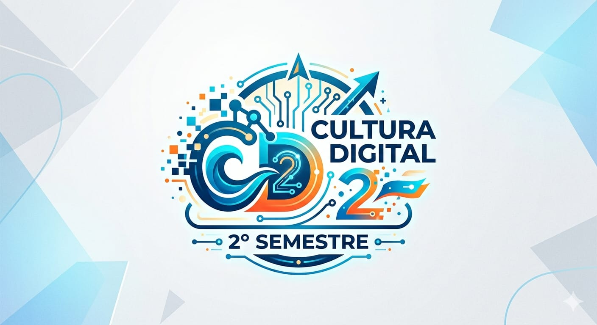

Misión de la materia de cultura digital Formar estudiantes con una sólida cultura digital y pensamiento crítico, capaces de utilizar herramientas tecnológicas de manera ética, eficiente y creativa para resolver problemas cotidianos y desenvolverse en la sociedad actual.
Ser un espacio formativo que impulse el uso crítico, creativo y responsable de las tecnologías digitales, fomentando en los estudiantes competencias que les permitan adaptarse a los cambios del mundo contemporáneo, participar activamente en la sociedad del conocimiento y contribuir al desarrollo sostenible mediante la innovación tecnológica.
Elvis Macias Guzman Ing. En Sistemas Computacionales Lic. En la enseñanza del idioma inglés